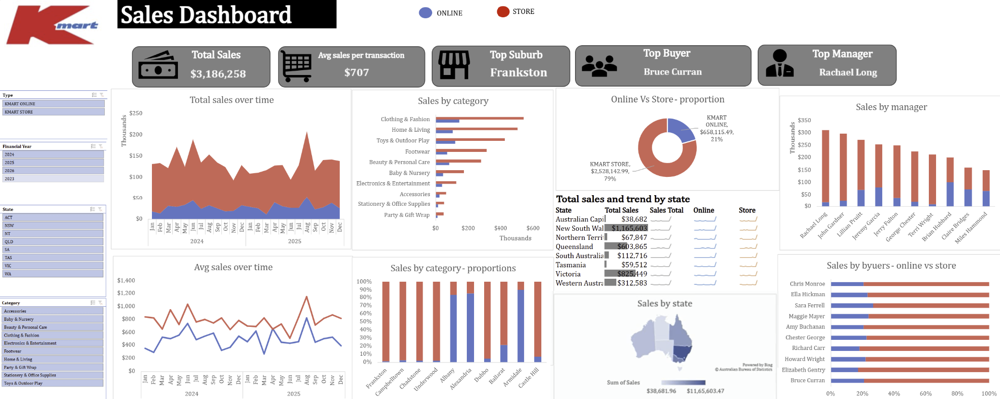

An end-to-end Excel project transforming raw Kmart transaction data into a clean, interactive sales dashboard — covering data cleaning, pivot-table analysis, and executive-level visualisation across store and online channels.

This project simulates a real-world business analytics workflow: starting from raw, unclean transaction records and turning them into a decision-ready dashboard for stakeholders. It demonstrates the full Excel analytics pipeline — cleaning inconsistent data, structuring it for pivot-based analysis, and designing a dashboard that surfaces key business insights at a glance.
Using Pivot Tables, Pivot Charts, KPI cards, and slicers, the dashboard lets stakeholders explore trends across financial years, states, suburbs, product categories, buyers, and managers — all from a single screen.
Transaction records arrived with inconsistent formatting and no structure, making direct analysis unreliable.
Store and online sales existed without a combined view, making side-by-side channel comparison time-consuming.
High-value buyers and managers driving disproportionate revenue had no visibility, missing opportunities for retention and recognition.
Standardised inconsistent formats and structured raw transaction data into an analysis-ready dataset.
Built pivot tables to aggregate sales by channel (Store vs Online), financial year, state, suburb, category, buyer, and manager.
Connected pivot charts and KPI cards to the pivot models, adding slicers for dynamic filtering across every visual simultaneously.
Layered in a state-level sales map and buyer/manager rankings to surface where and who was driving the most revenue.
Physical store sales account for 79% ($2.53M) of total revenue vs 21% ($658K) online, confirming stores as the primary channel.
This category consistently outperforms Home & Living, Toys & Outdoor Play, and Footwear across the sales-by-category breakdown.
NSW ($1.17M) and Victoria ($825K) are the top-performing states, far ahead of Queensland ($604K) and the remaining states.
Bruce Curran leads all buyers and Rachael Long leads all managers by sales, standing out clearly from the rest of the field.
With online at just 21% of sales, targeted digital promotions in top categories could meaningfully close the gap with store revenue.
As the leading category, ensure stock depth and promotional focus continue to prioritise this segment.
Allocate stock, staffing, and marketing spend toward these two states first, given their outsized share of total revenue.
Bruce Curran and Rachael Long's outsized contributions warrant retention strategies and performance-based incentives.
Study what makes the top suburb outperform others and apply those learnings to underperforming locations.
Integrating returns, margins, and customer lifetime value would deepen the analysis and sharpen future decisions.